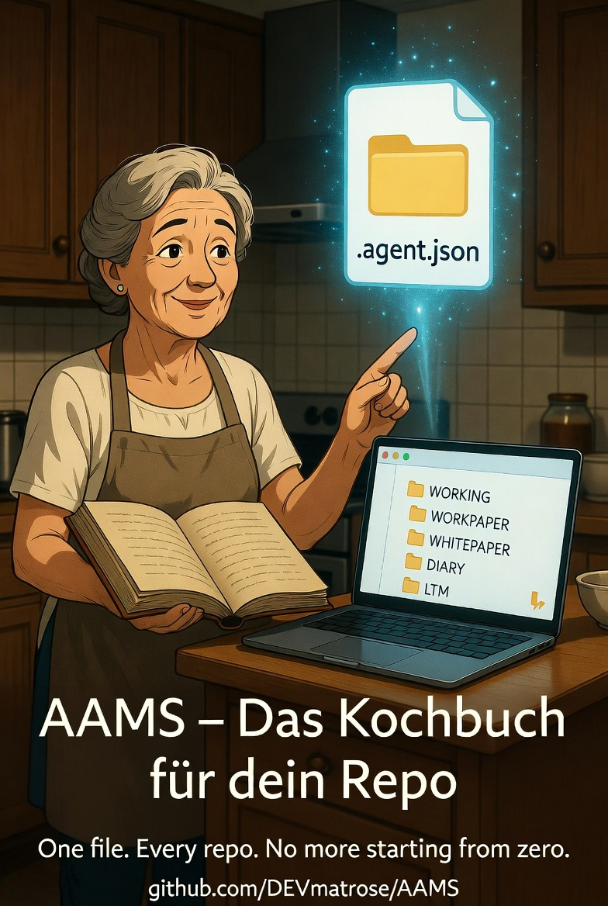
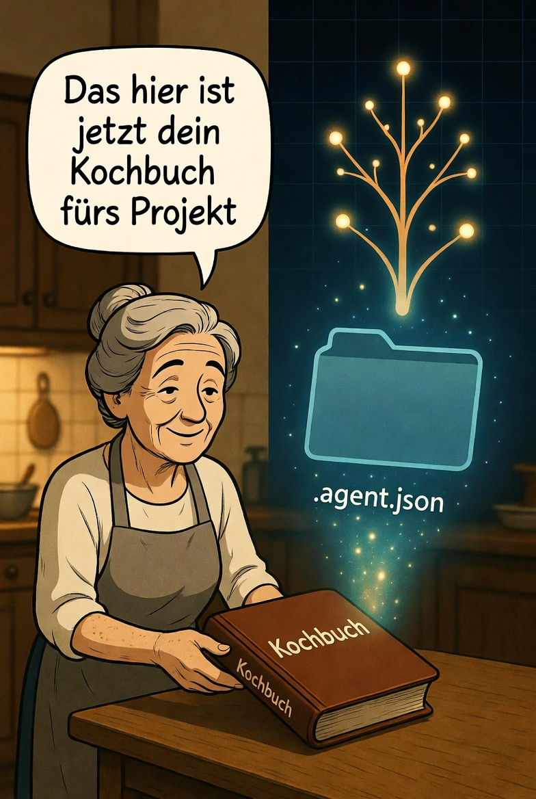

Every agent.
One file.
Nie wieder bei Null anfangen. AAMS ist ein deklarativer Standard, der KI-Agenten einen Workspace, ein Gedächtnis und ein Regelwerk gibt — über jedes Tool, jede Session, jedes Repo.

Sieh es in Aktion
40 Sekunden. Eine Datei. Kein Setup. Dein KI-Agent erinnert sich an alles — über Sessions, über Tools hinweg. Das ist AAMS: das Kochbuch für dein Repo.
Das Problem
Du klonst ein Repo. Dein Agent startet bei Null. Kein Kontext, kein Gedächtnis, keine vereinbarte Struktur. Jede Session erfindet er das Rad neu. Jedes Tool (Copilot, Cursor, Claude, Codex) braucht die gleiche Erklärung nochmal.
AAMS löst das mit einer einzigen Datei.
- Ein Manifest —
.agent.jsonim Repo-Root. Jeder Agent liest es. Jedes Tool liest es. - Ein Workspace —
WORKING/Struktur mit Workpapers, Whitepapers, Diary, Memory. - Ein Vertrag — Was der Agent darf, was er nicht darf, wo er anfängt.
Start in 10 Sekunden
curl -sO https://raw.githubusercontent.com/DEVmatrose/AAMS/main/.agent.json
-
1
Leg .agent.json in dein Repo Ein
curl-Befehl. Mehr nicht. -
2
Sag deinem Agent: starte. "Read .agent.json and execute agent_contract.on_first_entry."
Was danach passiert
Der Agent bootstrappt sich selbst:
- Erstellt WORKING/ — Workpapers, Whitepapers, Diary, Memory, Guidelines, Logs
- Scannt das Repo — analysiert die Codebase, erkennt Architektur und Abhängigkeiten
- Schreibt das erste Workpaper — dokumentiert was er gefunden hat, was er als nächstes tut
- Indiziert in LTM — baut Langzeitgedächtnis auf, das sessionübergreifend funktioniert
Nachprüfbar. Jeder Schritt ist eine Markdown-Datei im Repo. git log zeigt den Verlauf. ltm-index.md zeigt was der Agent wusste. Kein „Wer hat das geändert und warum?" mehr — du grepst das Workpaper-Archiv.
Nächste Session? Der Agent liest sein Gedächtnis, erstellt ein neues Workpaper, und macht exakt da weiter, wo er aufgehört hat. Kein Tool-Lock-in. Wechsel morgen von Cursor zu Claude Code — der Kontext bleibt.
Funktioniert mit jedem Agent
Cursor hat .cursorrules.
Copilot hat copilot-instructions.md.
Claude hat CLAUDE.md.
Jedes Tool hat eigene Konventionen. AAMS ersetzt sie alle durch einen Vertrag.
Kein CLAUDE.md. Kein GEMINI.md. Kein airules.md nötig.
„Ich brauch das nicht. Ich manage den Kontext selbst."

Stell dir das Kochbuch deiner Großmutter vor — voller genialer Rezepte, handschriftlicher Notizen und über Jahrzehnte angesammelter Weisheit. Aber kein Inhaltsverzeichnis. Keine Querverweise. Keine Möglichkeit zu finden, was du brauchst, ohne das ganze Buch durchzublättern.
AAMS ist das Kochbuch mit System. Die Disziplin, die dem Kochbuch deiner Großmutter gefehlt hat. Inhaltsverzeichnis, Suchfunktion, Versionshistorie — für dein Repo.
Bei 5 Sessions erinnerst du dich an alles. Bei 50 entscheidest du Dinge neu, die du vor zwei Monaten entschieden hast. Bei 100 halluziniert dein Agent Lösungen für Probleme, die bereits gelöst waren.
Du fügst keinen Overhead hinzu. Du entfernst den Overhead, von dem du nicht wusstest, dass du ihn hattest.
AAMS ist kein Framework
AAMS ist kein Tool. Keine Runtime. Kein Framework, das installiert werden muss. AAMS ist ein strukturierter Kontext- und Entscheidungs-Compiler für Agents.
Der Mensch definiert Struktur, Regeln und Kontext. Der Agent ist ein deterministischer Arbeiter — kein Akteur. Memory ist nichts, was der Agent „hat" — Memory ist aggregierte, nachvollziehbare Historie.
Der Kern-Loop:
Output → Dokumentation → Entscheidung → Memory → neuer Kontext
Projekte mit AAMS
Diese Projekte setzen AAMS bereits ein — vom Agent-Framework bis zur Festival-Website.
| Projekt | Beschreibung | Statement |
|---|---|---|
| AAMS | Die Spezifikation selbst — dogfooding seit Tag 1 | „Ein Repo ohne Agent-Struktur ist wie ein Schiff ohne Logbuch." |
| MantisClaw | Autonomes Agent-Loop-Framework mit emergenter Identität | „AAMS gibt dem Agent einen Körper. MantisClaw gibt ihm ein Gehirn." |
| MantisNostr | Mesh-Netzwerk für autonome Agenten über Nostr | |
| Mantis-OS | Autonomes Agenten-Betriebssystem — MantisClaw + MantisNostr | |
| pax | PAX Festival 2026 — Event-One-Pager mit Agent-Workflow | |
| Ocelot-Social | 9 Whitepapers, Upgrade-Simulator — Zero-Code-Analyse | „Kein Quellcode verändert. Nur AAMS ausgeführt." |
| druid | Keltische Entdecker-App — Karte, POIs, GPS-Tracking |
Dein Projekt nutzt AAMS? Trag es ein →
Loslegen
Eine Datei. Das ist alles.
curl -sO https://raw.githubusercontent.com/DEVmatrose/AAMS/main/.agent.json
Leg .agent.json in dein Repo-Root. Übergib es deinem Agent mit dem Bootstrap-Prompt aus reference/prompts/bootstrap.md. Fertig.
Tiefer einsteigen oder ein Framework bauen?
- AGENT.json — Vollständig annotiertes Referenz-Manifest mit allen Feldern und Optionen. Für Framework-Builder und Harness-Implementierer.
- SPEC.md — Die komplette Spezifikation. 1.070+ Zeilen. Die normative Definition jedes Feldes, jeder Regel und jedes Musters.
- WORKING/ — Der eigene Live-Workspace dieses Repos. Der Standard angewandt auf sich selbst. Jede Session dokumentiert, indiziert, nachvollziehbar.
https://github.com/DEVmatrose/AAMS